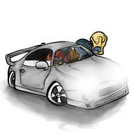

Amine Edge e DANCE
Amine tras em seu lançamento mais recente linhas de grave bem definidas alguns vocais no estilo clássico que se tornou sua marca registrada. Um bom EP para quem quer iniciar no tech house
https://open.spotify.com/album/7pF26gBs6mecui2kmDsecb?si=XXH46n21S1mFk5YReyJRDAYunk Vino

Yunk Vino é um artista musical que apresenta um estilo que mistura pop, R&B e hip-hop. Suas letras sinceras abordam temas como amor, perda e superação. Apesar de pouco se saber sobre sua vida pessoal, sua música tem sido elogiada por sua capacidade de transmitir emoções poderosas e pela qualidade de suas produções. Com um futuro promissor, Yunk Vino é um artista que vale a pena ficar de olho.
https://open.spotify.com/track/5O4dyvMVJaGcxvawaCGQDy?si=36a5d0369b8d47dcéo TGL
com lançamentos qque estouraram nas redes sociais como puto e cheiroso
https://open.spotify.com/track/71bp9kW2tipFFKy4EiQMLR?si=0a803c21d5b84884o que é a musica para você
"Música é uma arte que se manifesta através de sons organizados em uma sequência harmoniosa e com ritmo definido. Ela pode ser produzida por instrumentos musicais, voz humana e também através de tecnologias de produção musical. A música tem a capacidade de provocar sensações e emoções diversas, além de desempenhar um papel importante na cultura, tradições e identidade de um povo."
Nilson"Música é a arte dos sons onde se encontram varios ritmos diferentes,para mim a música é muito importante pois estou utilizando em quase tudo o que eu faço, quando estou estudando,jogando ou relaxando e serve tambem para me ajudar nos meus dias ruins"
Eder"A musica é algo que esta presente a todo tempo no meu dia a dia sempre me ajudando a me expressar de forma mais leve e suave seja cantando ou apenas ouvindo. Senpre que posso estou tentando descobrir coisas novas novos estilos, artistas e etc"
Kauã